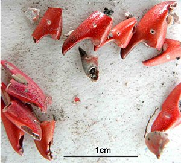
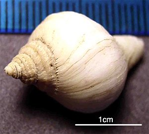
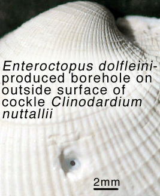

Chobotnice jsou nejinteligentnější bezobratlí na planetě. Řeší bludiště a hlavolamy, zapamatují si řešení a příště postupují efektivněji. Odšroubují uzávěr sklenice, aby se dostaly k odměně. Staví si úkryty — po návratu z lovu zatarasí vchod do doupěte kameny. Byly zaznamenány případy, kdy se chobotnice vzdala jídla výměnou za hračku.
Mozek chobotnice je největší ze všech bezobratlých. Jejich inteligence přitom vznikla zcela nezávisle na naší — evoluční cesty chobotnic a savců se rozdělily před více než miliardou let.
Dvě třetiny všech neuronů chobotnice se nenachází v mozku, ale v ramenech. Každé rameno má částečnou vlastní inteligenci a dokáže reagovat nezávisle na zbytku těla. Přísavky jsou vybaveny dotykovými i chemickými receptory — chobotnice jimi současně hmatá i "ochutnává" vše, čeho se dotýká.

Oko chobotnice je na pohled nápadně podobné lidskému. Ale uvnitř funguje jinak — a lépe. Lidské oko má slepou skvrnu, místo kde optický nerv prochází sítnicí a kde nic nevidíme. Chobotnice tuto "chybu" nemá. Fotoreceptory jsou orientovány ke světlu, nervy vedou za sítnici — žádné přerušení, žádná slepá skvrna.
Paradox: chobotnice pravděpodobně nevidí barvy — má jen jeden typ fotoreceptorů. Přesto dokáže dokonale napodobovat barevné vzory prostředí. Jak? Vědci se domnívají, že může vnímat barvu přes kůži, nebo využívá tvar zornice jako spektrální filtr. Záhada zatím není rozluštěna.

Buňky na povrchu kůže — chromatofory — obsahují váčky s pigmenty. Chobotnice je dokáže roztáhnout nebo stáhnout během zlomků sekundy a okamžitě změnit barvu i vzor celého těla. Kůže ale nemění jen barvu — mění i texturu. Hladká kůže se proměnění v hrbolatý povrch napodobující kámen, korál nebo mořské dno.
Barvoměna jde ještě dál. Chobotnice dokáže aktivně napodobit konkrétní živočichy — mění tvar těla, pohyb i zbarvení tak, aby připomínala nebezpečné druhy. Byly zaznamenány napodobeniny mořského hada, perutýna nebo platýse. Tato schopnost se nazývá batesovské mimikry — chobotnice hraje roli nebezpečného živočicha, aby mohla bezpečně přeplacat přes ohrožené území.
Zatímco mimikry je aktivní představení, mimeze je dokonalé splynutí. Chobotnice se přizpůsobí konkrétnímu povrchu — kameni, korálu, řase — a doslova zmizí. Kombinace barvy, vzoru a textury kůže vytváří kamufláž, kterou je téměř nemožné odhalit.
Chobotnice je vybavena třemi smrtícími nástroji. Silný zobák roztrhá i tvrdý krunýř kraba. Jazyk — radula — je posetý výběžky jako rašple a odstraní maso z kosti. Ve slinných žlázách se tvoří paralyzující toxin.
Do mušlí chobotnice nevstupuje silou — vyvrtá přesný otvor v místě svalu, který mušli drží zavřenou, vstříkne jed a mušle se sama otevře. A to není vše: chobotnice byly zaznamenány jak "organizují" kanice — naháněly je tak, aby tito pro ně vyplašili kořist z úkrytů. Spolupráce různých druhů při lovu je u bezobratlých zcela výjimečná.



Chobotnice nemá kosti ani pevnou schránku. Jediná pevná část těla je zobák. To znamená, že se dokáže protlačit jakoukoli mezerou, která je větší než tento zobák — štěrbinou ve skále, trubkou, sítí. Tato schopnost z ní dělá lovce, který se dostane prakticky kamkoliv.
Chovatelé dobře vědí: akvárium s chobotnicí musí být dokonale uzavřené. Chobotnice otevírají víka, rozeberou filtrační systémy, ucpávají odtokové kanálky. Vylézají z nádrže, cestují po souši a byly zaznamenány případy, kdy chobotnice navštívila vedlejší akvárium — a vyjedla ho.
Jedna chobotnice v novozélandském akváriu pravidelně v noci opouštěla nádrž, přelezla na druhou stranu místnosti, snědla ryby a vrátila se zpět. Personál přišel na to až po několika týdnech.